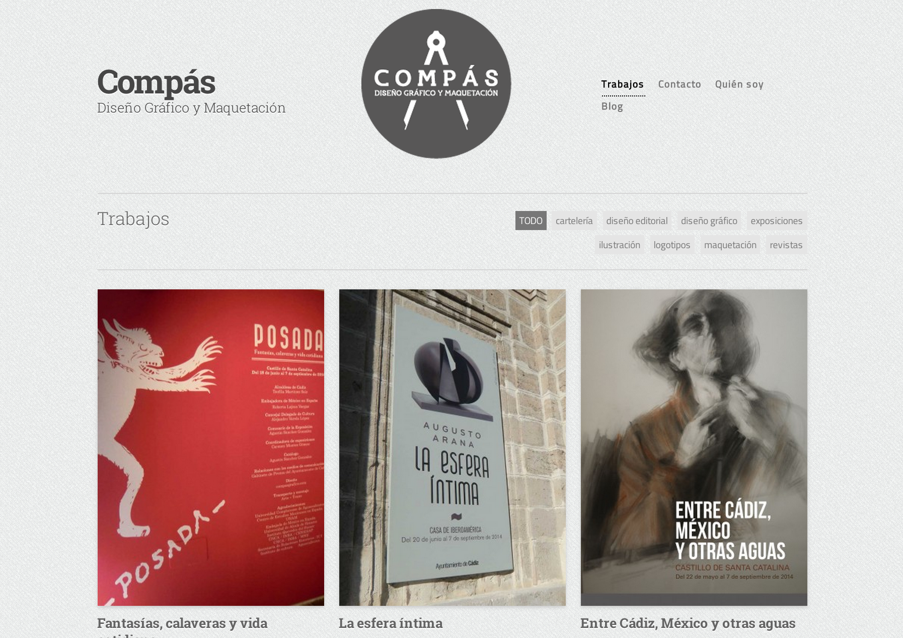
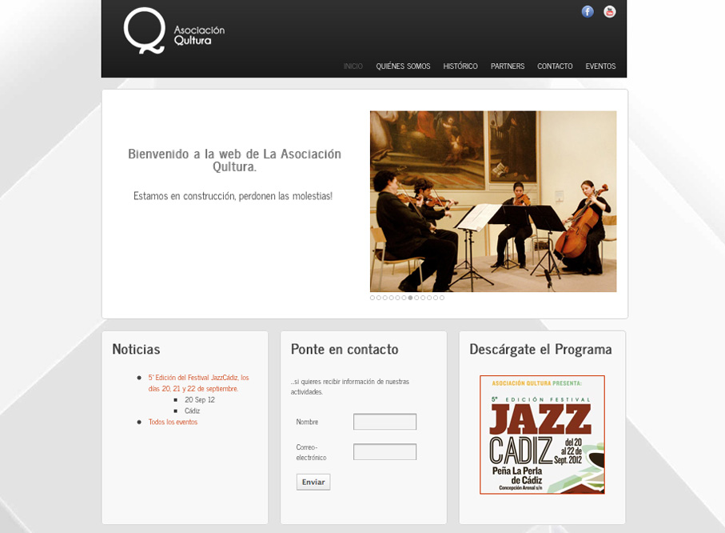

Andrea Mitchell
Software Engineer
Projects
Babel Chat
Developed over the course of 3.5 weeks at Hackbright Academy, Babel Chat is a video chat web app that allows language learners to connect with native speakers of their target language and engage in guided, interactive chat sessions. Providing an internationally convenient, entirely browser-hosted video language exchange, Babel Chat users can play games that cater to various learning styles while strengthening vocabulary, grammar, and communication skills. Users may also choose to discuss common themes by responding to questions in the chatbox, all in real time. Babel Chat is built in Python with a Flask framework, uses a SQLite database, and integrates the FlaskSocketio and OpenTok APIs for websocket functionality.
Check out the code on Github
Mash Game
Mash is a single-page site that recreates the childhood game “MASH”, using python flask routes and AJAX calls to give customized fortune tellings.
Check out the code on Github
Twitter Bot - Freewill Astrology
Developed in 2 days, the freewill astrology twitter bot is a text generator that uses a Markov Chain algorithm to create 'original' tweets from Rob Brezsny's Free Will Astrology column from the East Bay Express. It runs on python and uses the twitter API.
Check out the code on Github. Check out the live Twitter.Past Work
Compás Gráfico - Graphic Design Studio
Multi-functional website for a graphic design studio based in Southern Spain. Features a PHP-adapted wordpress template, blog-enabled, SEO-friendly, with a responsive layout.
Asociación Qultura - Arts & Music Association
Website and branding development for Asociación Qultura, an arts and music association based in Southern Spain. Features Wordpress-adapted template, responsive layout, SEO-friendly.